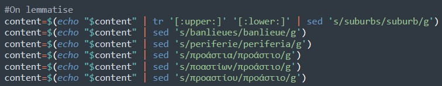

Onzième étape : Itrameur
Afin d’avoir une analyse fiable sur iTrameur, nous avons lemmatisé les termes banlieue/suburb/periferia/προάστιο et avons passé l’ensemble des fichiers en minuscule. L’analyse des cooccurrents sur iTrameur a été effectuée d’abord sur les fichiers dumps pour les cooccurrents, afin de pouvoir jouer davantage sur l’amplitude des extraits (nombre de mots sélectionnés à droite et à gauche du mot choisi). Le réseau des cooccurrents a quant à lui été effectué sur les fichiers contextes, qui permettaient de mieux orienter les graphes autour du mot choisi.

Nous avons rencontré des problèmes concernant les stopwords, que nous n'avons pas réussi à enlever sur iTrameur. De même, certains mots relatifs aux commentaires des pages web du corpus sont présents dans les réseaux de cooccurrence. Ces limites pourraient être dépassées en appréhendant mieux l’outil iTrameur.